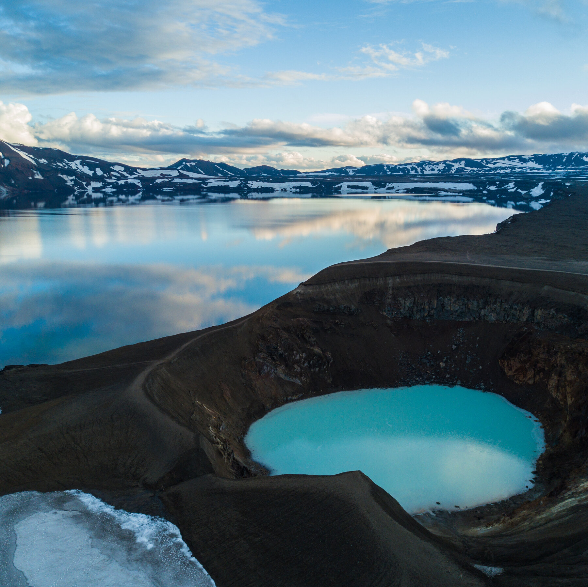

Iceland is typically divided into seven different geographical regions, including the Reykjavik capital area. Each region differs slightly with respect to both culture and landscape, but all are uniquely Icelandic. Island is primarily known for its volcanoes, geysers, hot springs, lava fields and even a couple glaciers. The country is located in north eastern Europe, and is home to less than 400,000 people.

Iceland is one of the most beautiful countries in the world. The landscape is amazing, with all kinds of different aspects that are found all in one place. It is like no other place on the planet, and out of all the destinations on this list, Iceland is the one I want to go to the most.
